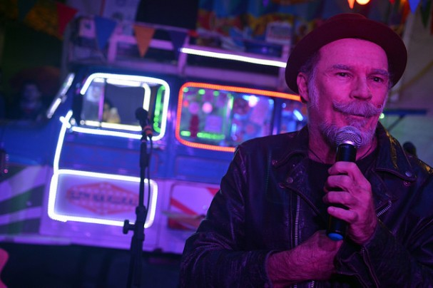

O Som no Estelita: uma entrevista com Roger de Renor
Depois de 10 anos do Movimento Ocupe Estelita, Renor relembra a importância da cultura para luta pelo direito à cidade
Crédito: Arquivo Pessoal
Depois de um leilão feito às escondidas em 2008, foi quando tudo começou a mudar. O Cais José Estelita, em localização estratégica no centro da cidade do Recife, havia sido vendido para a maior construtora do estado, a Moura Dubeux. Conhecida pelas suas construções ocupadas pela alta sociedade pernambucana, a empresa não avaliou o prejuízo de imagem que iria acarretar com aquele lance no leilão.
Muito antes das discussões sobre o Estelita começarem, já existia a necessidade de um olhar inclusivo para o Recife. Com tantos edifícios e pouca integração urbana. Mas o Movimento conseguiu chamar atenção de mais pessoas para esta problemática ainda tão escancarada na cidade até os dias de hoje. E foi exatamente isso que os protestos pretendiam: abrir os olhos do povo recifense.
E é aí que entra Roger de Renor. Ele se define como muitas coisas: vendedor, capoeirista, empresário, ator, apresentador de rádio e tevê e produtor cultural. Mas a mais imponente de todas as suas funções pode ser chamada de “agitador cultural”. Com o seu projeto chamado “Som na Rural”, Roger e o seu sócio Nilton Pereira espalham a cultura por onde passam no icônico Jeep Rural Willys 69 há 15 anos.
O agitador cultural diz que foi “pego de surpresa com essa violência em todos os sentidos” quando descobriu o que estava sendo feito com o Cais José Estelita. E a forma que ele poderia contribuir para que a sociedade abrisse os olhos para o que estava acontecendo foi levando a cultura para a ocupação. Nomes como Otto, Criolo, Karina Buhr e Kátia de França usaram a Rural como espaço para declamar suas canções em forma de protesto a tudo que estava sendo tomado do povo do Recife.
Mesmo com o boicote da mídia tradicional, o Som na Rural conseguiu furar a bolha e trazer cada vez mais a atenção para aquele espaço no popular bairro de São José. Além de buscar o entretenimento, as pessoas passaram a buscar o entendimento do que estava acontecendo e buscavam formas para ajudar a ocupação.
“Toda vez que a gente tem uma ameaça à liberdade de expressão, de ameaça dos direitos civis, a cultura é quem fala pela cidade”, afirma Roger de Renor ao relembrar a importância da cultura no Ocupe Estelita. Hoje, 10 anos depois, ele ainda lamenta o que aconteceu com o espaço, mas também comemora as conquistas do movimento.
Para começar, conte como foi que você entrou no Movimento Ocupe Estelita, como descobriu? E como conseguiu se relacionar com ele?
A gente já tinha uma relação com a galera que trabalhava, discutia e questionava essa história dos espaços públicos no Recife. Era um povo que, entre eles, estavam com maior protagonismo Liana Cirne, o coletivo “Direitos Urbanos", que estava se formando, e que eram pessoas que trabalhavam esse questionamento a partir do direito à cidade, a cidades mais horizontais. Tanto que a cidade continua, hoje, de uma forma bem mais avançada. E por a gente ter esse projeto, que trabalha praticamente a rua, a gente terminou se encontrando, porque inevitavelmente a gente ia se perguntar porquê a gente precisava de uma licença de uso de solo para fazer uma coisa em um lugar que a prefeitura não chamava para fazer ações conjuntas com a sociedade de ativação daqueles espaços, e a gente sofreu algumas represálias com isso. Era muito burocrático o processo para a gente. Tínhamos um projeto na Rua da Aurora que a gente colocava a Rural de quinze em quinze dias para tocar frevo. E era uma coisa que a gente tinha pensado porque as pessoas reclamam muito da falta de difusão de novas músicas, de lugares de encontros, para a gente escutar isso, já que as cidades não cumprem esse papel, que é um outro problema público. E aí a gente resolveu fazer isso na Rua da Aurora. Fez, juntou e praticamente mudou o uso ali da rua. Nós colocamos aquele caranguejo, e aí o caranguejo virou um lugar de encontro para outros lugares também, outras pessoas começaram a ocupar. Até que um dia, a prefeitura resolveu cobrar uma licença da gente, que estava atrasada, tinha vencido há uma semana. A gente estava fazendo aquilo há três ou quatro meses. E aí tinha uma licença lá que não tínhamos conseguido tirar, e eu que já tinha conversado com ele, que a gente queria fazer uma coisa com um horário mais tarde, porque queriam que a gente começasse às 16h. Era uma coisa bem burocrática, eles não entendiam isso. Aí a gente fez a licença e eles mandaram a Polícia Militar, um efetivo bem exagerado para uma coisa que era um negócio artístico, bem parceiro. E aí, nesse dia, por coincidência, ia tocar uma banda, se não me engano da Inglaterra, que tava aqui em Recife, patrocinada pela Heineken, e ela fazia espetáculos em espaços públicos. O produtor dessa banda já tinha morado um tempo no Brasil e me procurou dizendo que a banda não falava português e agora estava aqui. E o primeiro lugar que ela ia tocar no Brasil, era em Recife, mas não tinha lugar pra tocar na rua, mas a banda não sabia disso. Então, queriam saber se podia tocar no Som da Rural. E é claro que a gente topou. O som era precário e tudo, mas o negócio chamou uma atenção arretada. Para se ter uma ideia, DJ Dolores quando soube que essa banda ia tocar, ele mandou um negócio: “não tô acreditando, a banda tal em Recife, na rua”. A prefeitura não sabia o que essa banda significava, e aí os caras botaram na página deles quando a prefeitura chegou lá com a polícia. A banda publicou que o show foi cancelado na primeira noite no Brasil por causa da polícia. E aí teve uma repercussão da gota. A gente fala que a prefeitura naquela gestão foi o nosso “promoter” na rede social. A gente tinha uma conta que nem era ativa, mas a gente reativou ela e ganhou esse top de rede social de tanto que se falou na gente. Os três jornais foram lá na mesma hora. A gente ficou segurando a polícia lá, que queria rebocar o nosso carro, até os policiais convencerem a gente. Por conta disso, a gente conseguiu uma reunião com a prefeitura. Chamamos a atenção para essa questão do uso do solo do espaço público e passou a encampar mais essa área, essa história do espaço público dentro da cidade, que é o nosso campo de ação até hoje. Depois disso a gente teve a Praça do Diário também, que a gente ocupou para fazer atividades quinzenais ou uma vez por mês durante muito tempo, vários meses. A gente acabou se deparando também com a privatização da praça, que era cercada para um camarote do Galo da Madrugada, e aí a gente resolveu também levantar essa questão junto com Liana. Fizemos um pedido de informação e chamamos atenção para aquilo, porque a praça do diário era cercada e faziam camarote da própria prefeitura, para patrocinadores do Galo, secretaria de cultura, turismo etc. Tinham vários camarotes dentro da Praça do Diário, que é liberado o resto do ano e durante o carnaval virava um camarote para privilégios. E a Praça, que era um lugar para as pessoas usarem como um respiro, era cercada. E como são até hoje. Onde dizem que é para proteger o patrimônio público do próprio cidadão, é no mínimo contraditório pensar numa história dessa na cidade. E aí a gente conseguiu. A Globo desistiu de botar o camarote lá a partir desse ano, que a gente disse que não ia sair. No meio desse negócio, aparece o Estelita, que já era um absurdo. Não precisava ter nenhuma experiência no ramo imobiliário, com a especulação, nem urbanismo, nem nada, mas quando a gente viu aquela notícia no jornal, todo mundo viu que o Estelita inteiro, a área do Cais José Estelita tinha sido vendida num leilão por um valor que todo mundo sabia que era ridículo. 50 milhões de reais ou alguma coisa assim. Você faz o cálculo, 50 apartamentos você pagava o leilão. Todo mundo se mobilizou com isso e a cidade, pela primeira vez, se conectou com a causa que era comum e que não era aquela coisa que normalmente só se mobiliza quem tá sentindo na pele, como um despejo, como um desastre, de cheia. Era pela cidade, era por uma cidade mais horizontal, pelo futuro da cidade. E foi muito legal quando se ocupou para chamar atenção disso. E a Rural já tinha essa coisa de ser palanque e palco ao mesmo tempo, meio que uma assembleia da galera. A gente foi convocado pela turma para fazer parte dessa história.
Quais eram suas atividades de militância no Movimento do Ocupe Estelita?
Os jornais foram praticamente censurados pela Moura Dubeux. A construtora comprou todo o espaço da mídia. A gente não tinha uma rede social forte como a gente tem hoje. Era no máximo o Facebook, não tinha Instagram ainda. A gente não mobilizava, na verdade. Só com o Facebook, a gente conseguiu se organizar, mas não mobilizar como a gente consegue hoje em dia. A gente não tinha o apoio da Globo, como continuamos não tendo, mas a gente consegue com o compartilhamento do Recife Ordinário, a gente consegue mobilizar. Mas naquele tempo não. A gente ainda dependia disso. A Moura Dubeux comprou a mídia no Fantástico, depois da novela, depois do Jornal Nacional, e começou a passar pesquisas de opinião pública encomendadas. Pesquisas forjadas, inclusive, que depois foram questionadas e desmentidas. Com pessoas como o presidente do Galo da Madrugada, o bispo da Arquidiocese de Olinda e Recife, o padre da Igreja Matriz do bairro de São José, essas pessoas dizendo como o projeto ia melhorar tudo pra eles. Os jornais não publicavam que estava sendo ocupado, que os estudantes tinham ocupado, que as pessoas estavam com barracas no espaço. E aí as pessoas deram a ideia de fazer shows para chamar as pessoas para irem lá ouvirem isso. Além das aulas públicas, que foi uma coisa que começou lá, que eram os professores da Universidade Federal, Liana, um cara que morreu e tem o nome dele informalmente na praça do Estelita, outro que é o mais conhecido da galera toda. Enfim, as aulas públicas foram bem imprescindíveis também porque explicava pra todo mundo que estava lá, inclusive quem estava ocupando, o que é que as pessoas estavam fazendo lá, qual era o sentido daquilo, qual era o propósito, e também dava um levantamento legal da história, do jurídico. Era massa, essas coisas aconteciam na Rural também, mas principalmente pra sair como shows. Então, os jornalistas que eram a favor da causa, conseguiram curar essa falta de notícia, essa proibição da notícia, colocando a agenda do Som na Rural. Colocavam como sendo no “Espaço Cultural Estelita”. Começaram a chamar de espaço cultural. Mas colocavam que ia ter show de Otto, de Karina Buhr, todos os shows que rolaram lá. E aí isso “furou” bastante. Tem um negócio que eu guardo, que é muito lindo, que parece outro tempo: um menino trabalhava no Diário de Pernambuco, era administrador, e ele conseguiu fazer três dias seguidos aquele jogo dos 7 erros com a Rural, que era pra chamar a atenção. Impressionante, parece que estamos falando dos anos 1960, mas foi algo que aconteceu há pouco tempo. Para você ver como a cidade deu um pulo depois do Estelita, porque ainda tem aquele resquício de domínio do poder econômico tão forte quanto o poder militar da ditadura. Então, era isso, a gente conseguiu fazer com a Rural e com os artistas que estavam ligados à causa. Mobilizamos. Vários artistas foram para lá, como Otto, Kátia de França, o próprio Alceu não chegou a ir, mas declarou seu apoio. A Nação Zumbi, que não era de assumir uma posição a partir de uma questão política, abriu uma faixa. Porque era uma guerra política mesmo, que envolvia o Estado, o município, grandes patrocinadores.
Na sua percepção, qual foi a importância da cultura estar presente ali no Movimento Ocupa Estelita?
Toda vez que a gente tem uma ameaça à liberdade de expressão, de ameaça dos direitos civis, a cultura é quem fala pela cidade. A cultura parece que tem uma voz própria, independente das pessoas como comunidade. Não adianta prender todo mundo, porque uma criança vai aprender a bater lata e vai meter essa lata de novo na rua, vai inventar uma nova língua que todo mundo vai entender. Não adianta a censura. É muito doido isso, da gente ver hoje como o Movimento, com a história de Chico Science, por exemplo. De vez em quando eu penso na galera mais jovem de faculdade, como tem oportunidade, porque a minha geração não sabia quem é Josué de Castro, nunca tinha ouvido falar. Cara, eu nasci em 1963. Até os anos 90, eu não sabia quem era Josué de Castro. Nunca ninguém me falou sobre Josué de Castro. Mesmo depois da abertura, com o fim da ditadura, porque ele foi proibido, calado e invisibilizado de uma forma que realmente parecia que ele tinha sido esquecido, porque nenhum professor falava dele na universidade. Então não é porque eu não estudei que eu não sabia quem era Josué de Castro, não. Paulo Caldas, Emílio Ferreira, Kléber Mendonça, Liana Cirne… todas essas pessoas que são mais jovens que eu também não sabiam. Josué não tinha livro. Então a arte, mesmo que de forma involuntária, vai burlar essa história do apagamento, da censura, da proibição. Ninguém consegue apagar a história. As primeiras coisas que são atacadas são a educação e a cultura. E eu acho que a arte e a cultura são a voz da cidade, do povo. Então, a gente sempre precisou da cultura para isso. É para onde a gente corre, é o que vai conseguir suprir a falta da imprensa, da comunicação convencional. A cultura é essencial, é uma história ancestral de organização política de tudo, da formação do ser humano.
E você acha que o Som na Rural conseguiu engajar mais pessoas para o Ocupe Estelita? Por quê?
Acho que essa formação do Som na Rural com os artistas engajou. O poder econômico conseguiu o horário da Globo pra botar algumas pessoas que tinham interesse financeiro naquela história, como o dono do Galo da Madrugada, como o padre que tinha um claro interesse político nessa história e estavam pouco se lixando para a cidade ou para uma discussão mais humana sobre o futuro da cidade que a gente quer, que a gente não quer. Mas é o seguinte: quando a gente começa a aparecer com os artistas, fica difícil ele buscar um parâmetro para isso. Fica difícil o cara chamar Ivete Sangalo pra dar um depoimento, porque aqui em Recife não existia artista que se prestasse pra isso. Até poderiam conseguir isso, não duvide, mas não com a credibilidade que estes tinham e com o alcance que eles tinham. Lenine não estava aqui, mas tem foto dos pais dele no Cais José Estelita, Silvério (Pessoa) foi, todos os artistas engajaram nesse negócio. E a Rural fazia essa coisa de ser o palco, a gente era o palco dessa história. Era o palco e era o carro de som, amplificador. Teve um dia que a gente chegou lá pra fazer um dos grandes shows e chegou um carro da polícia e o policial falou que ia ficar lá com a gente, perguntou quem era o responsável e eu disse: “sou eu”. E aí o cara da polícia falou assim: “olha, a gente veio aqui porque o pessoal pediu proteção”. Tinham achado um cara lá uma noite antes que tinha dado uns tiros pra cima pra assustar a galera que tava dormindo lá. E aí a organização pediu uma proteção porque ia ter o evento. Então o cara da polícia me explicou isso, que estava ali pra fazer a segurança do evento. Depois de 30 minutos, ele me chamou e disse que tinha recebido um telefonema do superior e perguntou se eu tinha licença para realizar o evento. Eu falei: “irmão, isso aqui é um protesto. Ninguém tira licença pra fazer protesto não. Isso aqui é um ato político”. Ele falou: “não, tudo bem, mas é que o superior falou que se não tiver a licença, o senhor não vai poder fazer o evento”. Eu falei: “Você não entendeu esse negócio. Não é que eu não tenha licença para fazer o evento, eu não tenho nem carteira de motorista, nem identidade. Pode me prender agora. Eu acho melhor tu falar certo, eu sou peixe pequeno e tu também, brother. Isso aqui é uma das maiores construtoras que tem no Brasil. Eu sou um cara que tomo choque e tu é um cara que vem com outro parceiro teu. Já tem 500 pessoas aqui e vai ter três mil. Eu vou ter que falar bem alto no microfone que não vai ter porque vocês me deram uma ordem de não ter. Então, é melhor chamar reforço, porque teu superior te falou isso não é pensando em tu não, bicho. Ele tá tomando whisky em algum canto, hoje é domingo, velho! É bom tu falar com ele, mas se tu quiser eu cancelo agorinha, mas já tem um monte de gente aqui e vai chegar ainda mais”. Depois, ele voltou e disse que conversou com seu superior e que o pessoal tem espaço, mas da próxima vez teria que ter a licença. Então ainda tinha isso, sabe? Era um bocado de gente mandando. Então quando o papo ia ficando chato na hora de convencer as pessoas, o show de um cantor como Otto, atraía as pessoas. Então, eu acho que a função que a Rural cumpriu foi essa, de trazer a galera pra junto, para dizer “presta atenção, vamos ver isso aqui”. Porque a gente vinha de uma coisa também do movimento MangueBeat que tinha sido muito um movimento que tinha uma reflexão política, mas que depois o foco ficou sendo só os shows, na música e foi deixando a parte política de lado. E o Estelita vem numa outra marcha, numa outra catraca de entendimento político pra galera, de aula prática.
Qual foi a situação que mais marcou a sua vivência no Movimento Ocupe Estelita?
Tiveram várias, porque foi uma série de estratégias covardes que deu para a gente entender como é o modus operandi da direita mesmo, do poder. Porque aquilo foi um movimento de poder econômico, de abuso de autoridade. Então foram momentos bem marcantes. Era o tempo inteiro uma surpresa, num organismo que não tinha uma liderança clara. Era muito doido, porque você tava num lugar que tinham professores de universidade, urbanistas, arquitetos, advogados, professores de direito, o reitor da UFPE foi lá pessoalmente, mas você tinha morador de rua, os anarquistas, que nem sabiam o que era Anarquismo mas estavam lá, a galera mais jovem. Então, a invasão do negócio se deu no primeiro dia da Copa do Mundo. Aí aproveitaram isso, porque tinha uma garantia do governo do Estado de que a polícia não iria invadir, não iria desocupar o lugar com os estudantes lá dentro. E como tava todo mundo com o olho no primeiro jogo da Copa, a cidade acordou já pensando nisso. Telão no Cais da Alfândega, com aquelas palhaçadas todas, expediente até meio-dia. Então, acharam que a mídia estaria toda voltada para a Copa e iriam conseguir resolver tudo numa manhã e à tarde ninguém ia lembrar daquilo. Mas a gente já tinha essa mobilização entre os grupos e foi uma loucura porque aí não acabava. Então, fiquei sabendo disso e fui lá. Quando cheguei já vi tiros, bombas, muitas pessoas correndo. E aí encontrei Niltinho, meu parceiro do Som na Rural, ele subiu nos meus ombros para subir o muro e tirou algumas fotos. Na parte da tarde, quando parecia que estava tudo resolvido pra eles, a galera fechou o viaduto, fechou a ponte do Pina. Foi uma loucura. Aconteceram muitas coisas. A polícia montou, ali no Cabanga, uma formação grande do Batalhão de Choque. A polícia começou a avançar. Fizeram tipo uma caça. Então, eram essas coisas. Foi um negócio que a cidade mostrou uma organização política e também uma disposição para luta, para guerra, porque tem uma hora que tem que ir pro confronto mesmo e a galera se dispôs a isso. A gente descobriu aquela praça de Burle Marx, que fica embaixo do Cabanga, que ninguém usava. Então tem imagens lindas daquela praça, com Criolo cantando. São esses momentos marcantes, os momentos de conflito, da violência e os momentos de harmonia e de proposição, de paz, de beleza artística, isso das pessoas se unirem pela cidade, por uma cidade mais horizontal. Até hoje a gente fica lembrando disso, uma imagem de Caetana sentada na frente da polícia falando e tocando uma flautinha. São coisas bem marcantes, provocadoras, de que aquilo valeu a pena, que deu certo. Eu acho que deu tudo certo.
E num mundo ideal, o que você acha que deveria ter sido feito no Cais José Estelita?
Ideal para mim era assim: a pessoa que inventou aquela parada ali do leilão deveria estar presa. Aquele leilão deveria ter sido cancelado. Aquele lugar tinha que ser um grande parque, para que virasse uma praia no centro do Recife e a gente tivesse algo ali, entre Brasília Teimosa e o Bairro de São José, para respirar. Acho que isso seria o ideal. Além disso, que tivessem moradias populares e também poderiam ter os prédios que as pessoas querem, prédios de classe média, mas não prédios de milionários de uma forma tão ostentadora, como estão sendo vendidos agora. Eu vi uma propaganda que a mulher fala: “imagina você daqui olhando o seu barco ali embaixo”. (risos) Dá vontade de você tocar fogo numa lancha daquelas e depois gravar dizendo: “imagina você aqui olhando o barco daquela pessoa que está ali em cima pegando fogo aqui embaixo”. (risos) Que maravilha! Mas, assim, mesmo com tudo que a gente fica pensando que poderia ter sido, temos que lembrar que, em relação ao projeto, tivemos grandes avanços e ganhos. A quantidade de edifícios tem diminuído; a questão dos ônibus também, que, no primeiro projeto, não passariam mais por ali e, hoje, o trânsito continua. A gente pode pensar “que merda a gente não ter conseguido” quando passa por ali, mas era praticamente impossível impedir aquilo ali.
Você ainda acredita que o Recife ainda pode ser uma cidade mais horizontal ou isso está muito longe da nossa realidade?
Eu não posso deixar de acreditar nisso. A gente percebe que as construtoras tomam um cuidado maior por causa do grande prejuízo de marca que a Moura Dubeux sofreu com o movimento. E a lei nem precisa forçar nada, porque isso eles ainda conseguem burlar, mas a opinião pública e a organização popular não dá. Ninguém quer um prejuízo de marca do tamanho que foi o que a Moura Dubeux teve que passar. Os caras tiveram que pagar a Globo para tentar mudar a opinião pública, que, mesmo assim, continuou dividida. Imagina a grana que eles perderam com isso. Então, é possível perceber que essas empresas tomam um cuidado maior com a imagem que eles vão passar. Também não quero que estes locais de nível aquisitivo mais alto sejam proibidos, a classe média muitas vezes consegue ter acesso a estes lugares. O que eu não quero é que estes locais se tornem refúgios, que as pessoas tenham que ir para ali para ter segurança e não possam usufruir de uma praça, como a praça em frente ao Palácio das Princesas, devido à insegurança. Eu tenho esperança em uma cidade mais igual, porque sei que tem uma galera se preparando para isso, o pós-Estelita vem se armando de possibilidades para que isso aconteça, principalmente, com as redes sociais e a comunicação. A gente consegue muita coisa, talvez não do jeito que queremos, mas conseguimos incomodar bastante.
Para finalizar essa conversa da gente, queria saber como você acha que a política urbana do Recife consegue ser mais inclusiva com a cidade.
Eu acho que ouvindo mais. A gente tem uma política de planejamento que bateu os ventos, né? Tem o projeto “Recentro”, que não tem orçamento nenhum para atividades culturais, enquanto a Secretaria de Turismo tem um orçamento bem farto e trabalha com bastante independência política, que confere este princípio dos acordos partidários. Sem compromisso com a agenda cultural da cidade ou com movimentos que exaltam a cultura daqui, que continuam sem receber qualquer retorno. A gente percebe boa parte da cidade abandonada, espaços que a prefeitura até chega a experimentar no Carnaval, mas, no resto do ano, eles permanecem esquecidos. Isso tudo porque não há investimento, também conhecido como a vontade política e isso não existe. Acho que é isso: falta a vontade política de planejamento e a cidade pede socorro urgente. Os cidadãos do Recife estão reféns do descaso e não têm direito à própria cidade. Um exemplo é o Teatro do Parque, que merda que a gente conseguiu recuperar o Teatro, mas não tem a segurança de andar pelo entorno do local sem estar com medo da bandidagem. Temos acesso ao Teatro, mas não podemos ter ao entorno dele. Talvez seja porque o entorno também não tem acesso ao Teatro. Acredito que, quando a gente conseguir isso, que estas pessoas que estão em volta consigam ocupar estes espaços, pode ser que a gente encontre uma saída para essa parada da urbanização. Mas enquanto o pensamento for que precisamos tirar aquelas pessoas dali ou só ficar esperando que uma kombi apareça para alimentá-los à noite, isso não vai se resolver nunca.